Видео (от лат. video — смотрю, вижу) — электронная технология формирования, записи, обработки, передачи, хранения и воспроизведения подвижного изображения, основанная на принципах телевидения, а также аудиовизуальное произведение, записанное на физическом носителе (видеокассете, видеодиске и т. п.).
Количество (частота) кадров в секунду — это число неподвижных изображений, сменяющих друг друга при показе 1 секунды видеозаписи и создающих эффект движения объектов на экране. Чем больше частота кадров, тем более плавным и естественным будет казаться движение. Минимальный показатель, при котором движение будет восприниматься однородным — примерно 16 кадров в секунду (это значение индивидуально для каждого человека). Компьютерное видео хорошего качества, как правило, использует частоту 30 кадров в секунду.
| Поколение | Тип | Размеры (Ш. x В.): |
Соотношение | Формат |
| SD – Standard Definition (стандартная чёткость) |
SD | 720x576 | 4:3 | 576p |
| HD – High Definition (высокая чёткость) |
HD | 1280x720 | 16:9 | 720p |
| Full HD | 1920x1080 | 16:9 | 1080p | |
| UHD – Ultra High Definition (ультра высокая чёткость) |
4K UHD | 3840x2160 | 16:9 | 2160p |
| 8K UHD | 7680x4320 | 16:9 | 4320p |
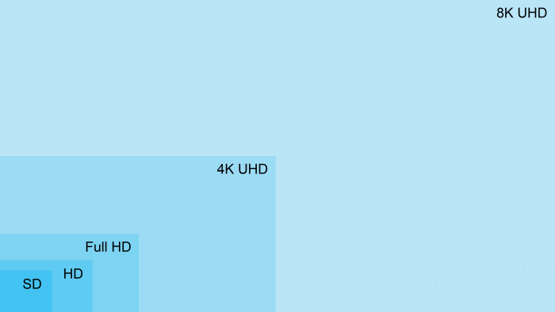
AVI (Audio Video Interleave) . Формат файлов с расширением .avi известен как медиаконтейнер. AVI — это формат-контейнер. Это означает, что он может содержать видео/аудио данные, сжатые с использованием разных комбинаций кодеков, что позволяет синхронно воспроизводить видео со звуком.
MPEG (англ. Motion Picture Experts Group — русск. экспертная группа по вопросам движущегося изображения) — группа специалистов, собирающаяся для выработки стандартов сжатия цифрового видео и аудио. Первое собрание происходило в 1988 году в Ганновере. С помощью MPEG-сжатия объем видеоинформации можно заметно уменьшить без заметного ухудшения изображения.
Windows Media Video — название системы видео кодирования, разработанной компанией Microsoft для хранения и трансляции видеоинформации в проприетарных форматах Microsoft.
MOV используется для сохранения видеороликов с помощью запатентованного алгоритма сжатия компании Apple. Такие файлы совместимы как с ОС Windows, так и с ОС Mac. Каждый контейнер файлов способен включать несколько типов мультимедийных данных - видео, видеоэффекты, текст, изображения, субтитры и звук. Стоит отметить, что этот формат часто используется программами, в которых редактируются видеоролики. Кроме того, очень часто при редактировании музыки и видео используются именно файлы MOV и QuickTime.
MKV (с англ. Matroska Video File) является форматом видео-контейнера и имеет определенную схожесть с форматами MOV, MPG и AVI. MKV формат обладает поддержкой нескольких алгоритмов сжатия. Примечательно, что формат MKV имеет возможность содержать различные субтитры. Открытый проект под названием Матрешка (Matroska) весьма быстро завоевал любовь поклонников просмотра FullHD, потому как возможности формата демонстрируют хорошую динамику передачи видео/аудио потоков.
Видеомонтаж – это процесс сбора и соединения определенных отрезков видео (а также музыки и картинок) в единое целое.
Редактирование и монтаж видео, на самом деле, не так сложен, как может показаться с первого взгляда. Если раньше этим занимались только профессионалы, то теперь это под силу любому желающему. С развитием технологий, в интернете появилась масса программ для работы с видео файлами.
Одной из программ для монтажа видео является VideoPad.
Скачивать программу лучше всего с официального сайта производителя, чтобы не подхватить вирусы. Запускай установочный файл.
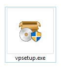
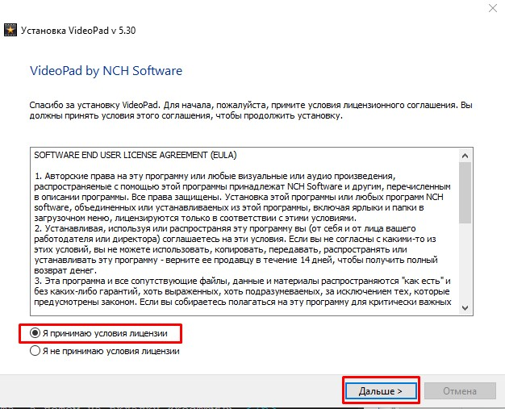
Обрати внимание на установку дополнительных приложений от производителя. Они никак не влияют на программу, поэтому галочки лучше поснимать.
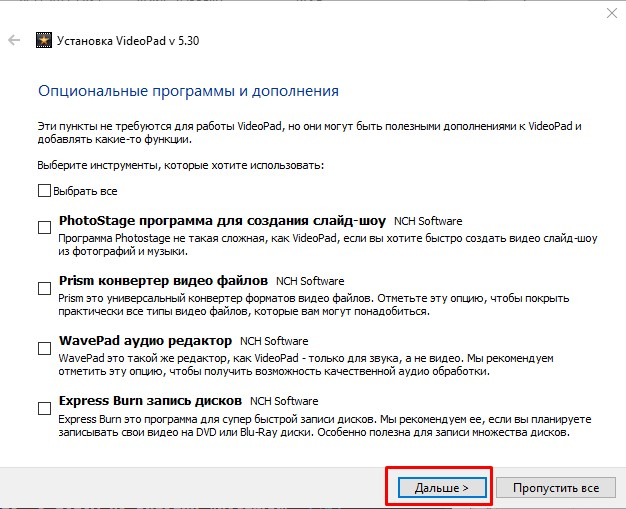
С остальным соглашаемся. После окончания установки, VideoPad Video Editor запустится автоматически.
VideoPad Video Editor поддерживает практически все популярные форматы видео. Чтобы начать работу, нам необходимо добавить видео в проект. Это можно сделать при помощи кнопки «Добавить файл (Add Media)». Или просто перетянем его в окно.
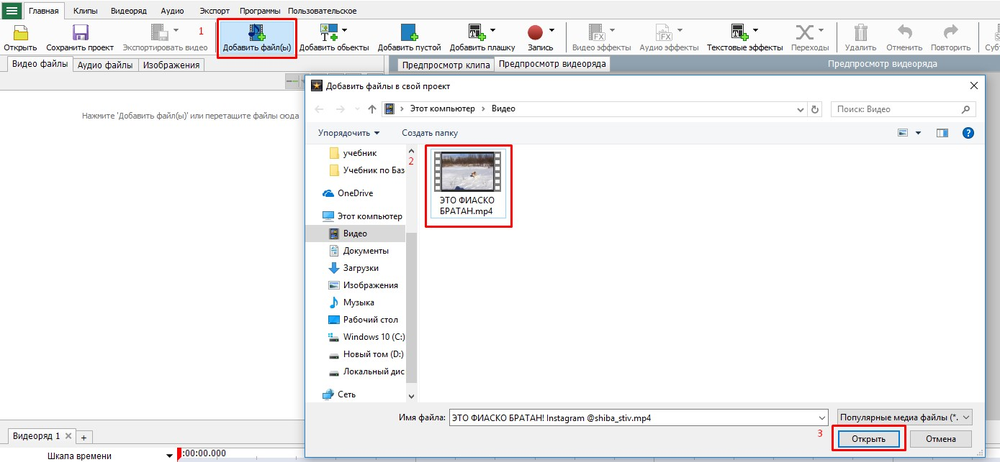Следующим этапом в твоей работе будет добавление видео файла, на специальную шкалу, где и будут осуществляться основные действия. Для этого перетягивай файл мышью вниз или нажимай на кнопку "Поместить выбранные клипы на видеоряд".
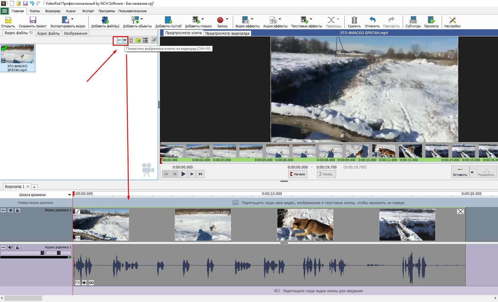Либо воспользуйся комбинацие клавиш ctrl + W
В результате слева у тебя будет отображается не измененное видео, а справа ты будешь видеть все примененные эффекты.
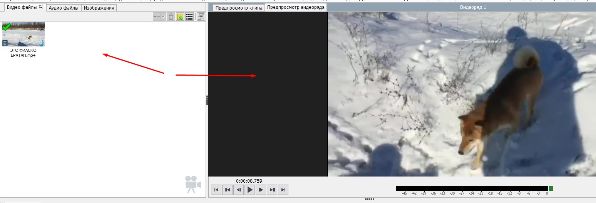Непосредственно под видео, на тайм-лайн, есть аудио дорожка. Там же при помощи специального ползунка меняется масштаб временной шкалы.
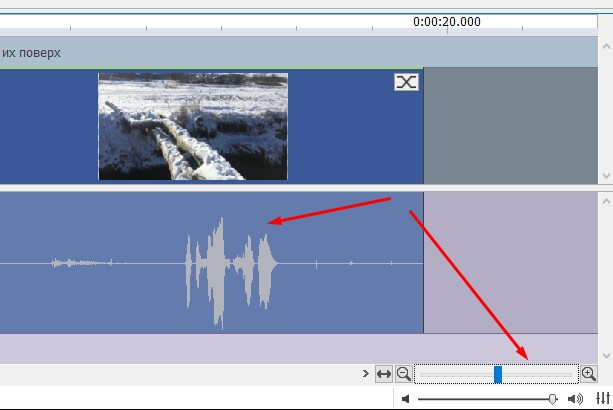Для того, чтобы разрезать видео и аудио дорожки, необходимо передвинуть бегунок в нужное место и нажать на кнопку "Разделить".
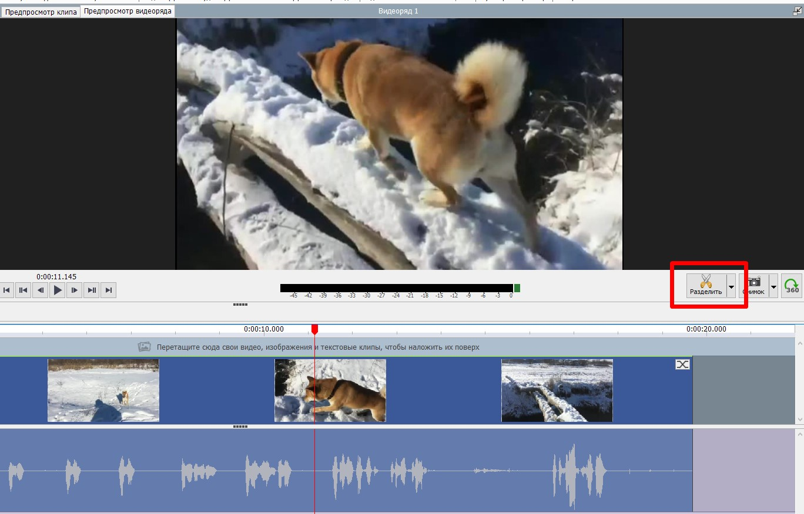Для того, чтобы вырезать часть видео, необходимо выделить участок, кликнув мышью в видео дорожке. Нужный отрывок будет окрашен в синий цвет, после чего нажми на клавишу «Delete».
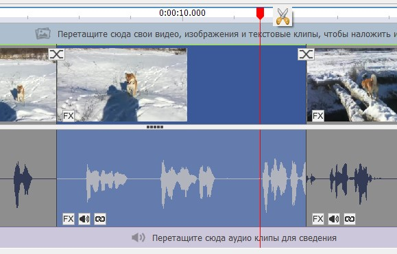Если отрывки необходимо поменять местами или сдвинуть, просто тяни за выделенный участок и перемещай его в необходимое место.
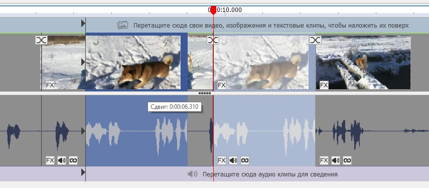Отменить любое действие можно комбинацией клавиш «Ctr+Z».
Сохранить отредактированное видео можно нажав на вкладку «Экспорт». Тебе будет предложено несколько вариантов, выбери "Видео файл". Далее введи имя файлу, выбери место сохранения и нажми кнопку "Создать".
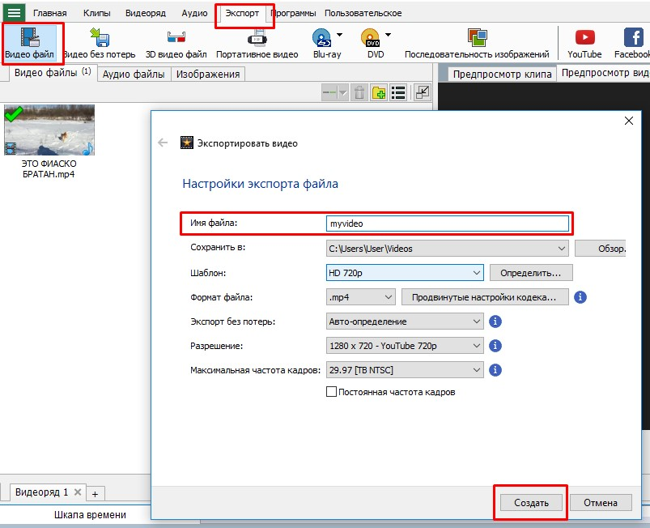Свой проект для внесения изменений можно будет открыть в любое время, если его сохранить. Для этого необходимо нажать на соответствующую кнопку и выбрать место на компьютере.
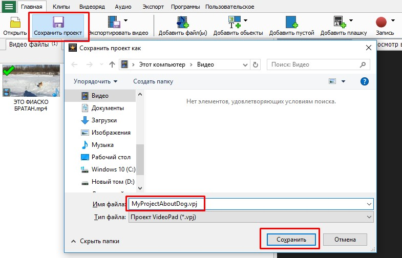1. На камеру мобильного телефона или другого устройства сними видеоролик на тему "Обзор моего мобильного телефона". Расскажи про его основные характеристики. Какой процессор, сколько памяти, размеры экрана и другие особенности.
2. Выполни сведение своего ролика в программе Video Pad, удали лишние моменты, если роликов несколько, соедени их вместе.
3. Сохрани получившийся ролик, опубликуй его на YouTube.
1. Скачай и установи VideoPad
2. Сделай обзор на любой предмет (скейт, коньки, велосипед, планшет и т.п.)
3. Выполни простой монтаж отснятого материала.
Камынин А.И. Учебное пособие по курсу "Базовая подготовка" 2017 ©